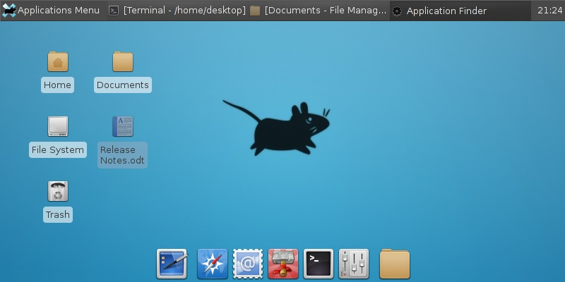
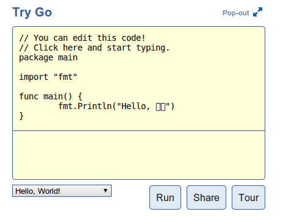
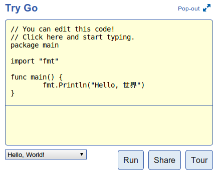

What I did after installing Manjaro xfce
After about 2 months with elementary OS, I got sick of the guaranteed once-every-hour crashes of its Files file manager (yeah, I’m still hating their naming decisions with a passion), the flickering when I play fullscreen OpenGL games, and the automatic collapsing of workspaces. I’ve had enough of that. Let’s go back to xfce! But hey, (X)ubuntu 14.04 is nearly out but I don’t want to install an alpha version right now, and installing 13.10 just to update 2 months later is insane (to me, at least). That’s when I noticed Manjaro - a battery-included distro based on Arch. All hail rolling release!
Although Manjaro comes packed with most of the apps that I would install on any other distro anyway: GIMP, LibreOffice, Steam, etc., here are some additional steps I took to make it rock.
If you get a default xfce environment after setup…#
It happened to me when I tried to mount my existing /home partition. Instead of the beautiful
screenshot featured on Manjaro’s home page, I got something like this (image courtesy of Xfce
project website):

I guess it was because of some weird bug that the partition ended up being owned by root so the
installer could not copy Manjaro-specific settings at the end. Make it your own again then copy the
default Manjaro files:
sudo chown $USER /home
cp -a /etc/skel/. ~/
Then restart your computer and see if it worked (it should).
Get Mirosoft fonts#
Getting Micro$oft fonts is like the first thing to do after any Linux distro installation. The Arch
community has a whole wiki page dedicated to it. It’s worth mentioning that you can’t
legally install those packages without the actual fonts already on your computer. Assuming you
have an installed copy of Windows 7, go to its Fonts folder and put the necessary fonts in the
same folder of the extracted package downloaded from the AUR page. For some instant copy-and-paste
shell commands: (warning: this script assumes you already have all your Windows 7 fonts in
~/win_fonts/. Put them there before running the following commands)
curl -O 'https://gist.github.com/nhanb/8804875/raw/arch-ms-fonts.sh'
bash arch-ms-fonts.sh
Proper font smoothing#
I won’t try to reinvent the wheels here. Head to Manjaro’s wiki page on font smoothing. They’ve got everything you need.
Install international fonts#
Even if you’re not Japanese or Korean, you’ll occasionally come across content that contains characters from these languages. With the default installation, all those characters will be shown as rectangles, which bugs me a lot.

The solution? Simple. Just install the ttf-droid package:
sudo pacman -S ttf-droid

Now that’s better!